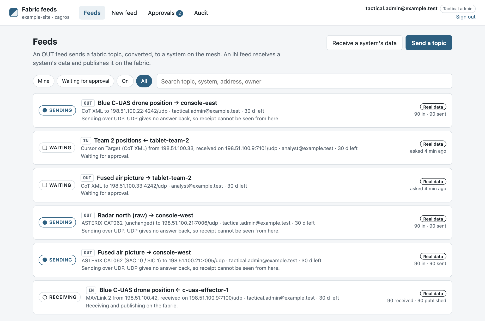
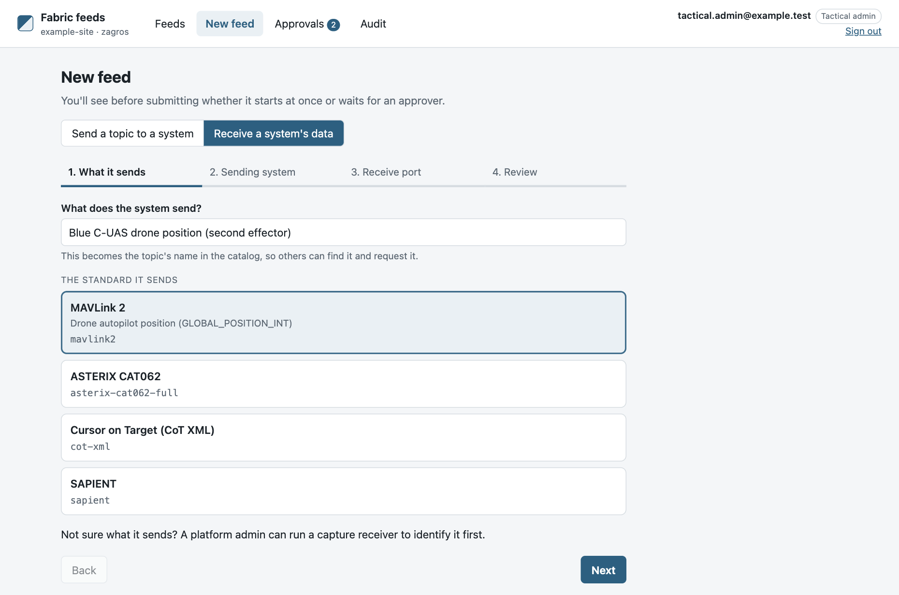
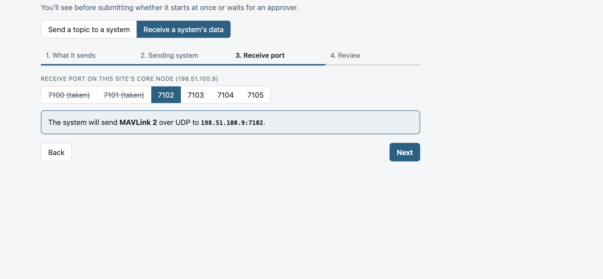
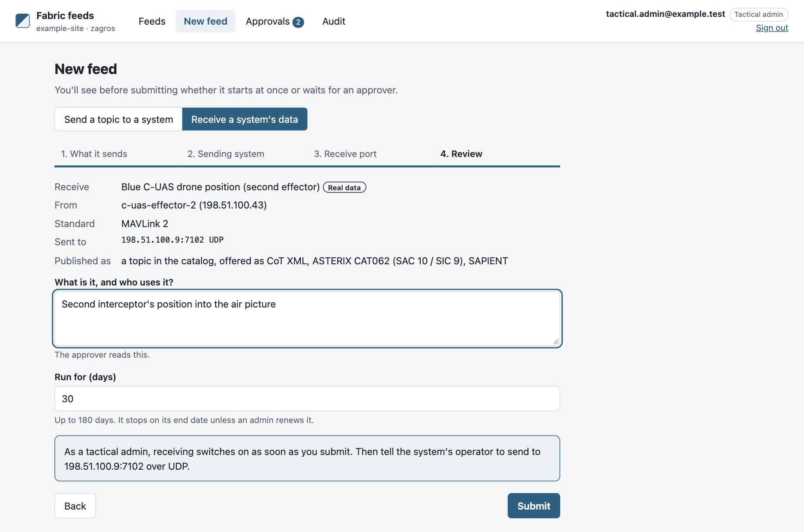
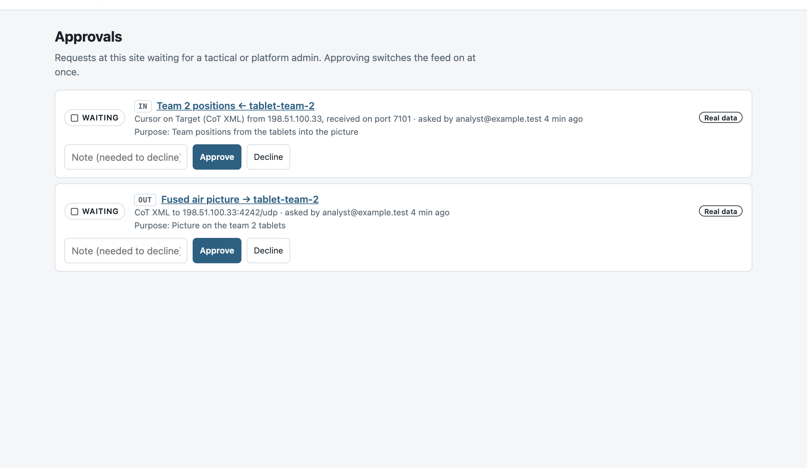
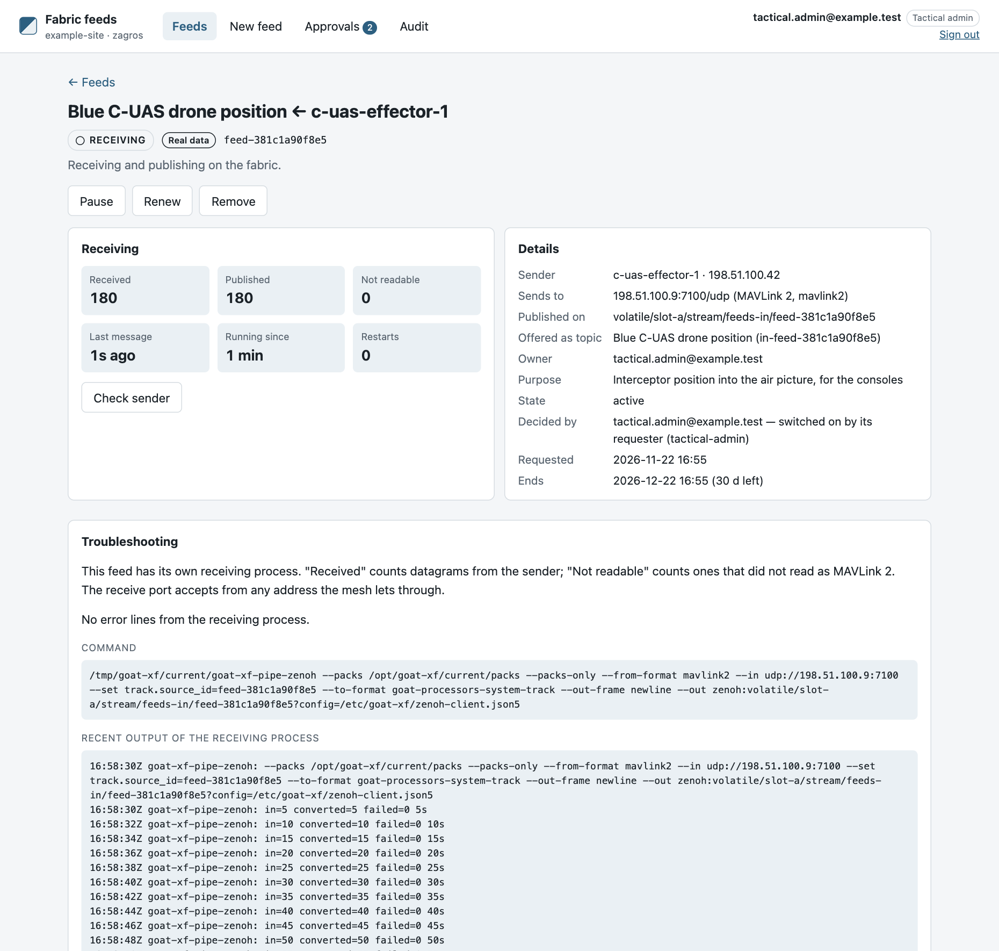

Fieldkit Feeds
Send fabric data to the systems that need it, and bring their data in. A tactical admin switches it on.
An operator picks a topic and the system that should receive it, or names what a system sends and the standard it uses. A tactical admin for the site switches the feed on; anyone else's request waits for one. Each feed shows one word for its health, its counters, the exact command it runs and who did what.
$ git clone https://github.com/usareur-af/goatstuff && cd goatstuff/ops/serve/goat-feeds && go test ./... && go build -o goat-feeds .
Part of goat · Apache-2.0 · Status: WIP, on trial
- 7actions on a feed: approve, decline, pause, resume, renew, remove, check. Fieldkit allows at most eight
- 1direct dependency, the Postgres driver; no JavaScript framework, no package manager, no build step for the page
- 2static Linux binaries, x86-64 and arm64, page included: the hosts the fleet runs on
- 813lines of HTML, CSS and JavaScript in the whole page
Every figure is reproduced with a command in Numbers.
How it works
Two directions, one approval rule.
Fieldkit is goat's family of small pages for operators who are not developers: one job each, a fixed list of actions, plain words. Fieldkit Feeds is the one for moving data between the fabric and the systems in the field.
OUT: send a topic
Pick a topic from the site's catalog (a fused picture or a raw sensor), the receiving system from the mesh, the port and the format: ASTERIX CAT062, CoT, SAPIENT or another the format library writes. Feeds of one topic and format share one process, so a thousand of them are one subscription.
IN: receive a system's data
Name what the system sends, choose its standard (MAVLink 2, ASTERIX, CoT, SAPIENT) and a free receive port. The core node publishes each message on the fabric, and the received feed appears in the catalog so anyone can send it on as CoT, CAT062 or SAPIENT.
Approval
A tactical admin for the site, or a platform admin, switches a feed on at once. Anyone else's request waits in Approvals. Real data always needs an admin; a site may let simulated topics be self-service. The page shows before submitting which one applies.
Screens
The four steps of receiving a drone's position, as a tactical admin sees them.
Captures of goat-feeds built from goatstuff main, signed in as a tactical admin, with example names and documentation addresses. The converter behind it was a stand-in that counts messages; everything else is the real service. The screens follow your light or dark setting.






What runs
One service, one converter per feed group, one word for health.
goat-feeds is one Go binary with the page inside it. It keeps feeds and their audit log in the site's Postgres, takes identity from the sign-in fence in front of it, and every few seconds starts or stops converters to match the feeds that are on. A converter is goat's goat-xf-pipe-zenoh, reading or writing the fabric with the formats of the goat format library.
Health, as the feed list shows it
OUT: running, messages arriving and converted.
IN: datagrams arrive and read as the chosen standard.
IN: on, nothing from the sender yet.
Not running, or nothing converts. The last error is shown.
The tests, on goatstuff main
$ go test -v ./... | grep -E '^(--- |ok)' --- PASS: TestViewerRoles (0.00s) --- PASS: TestValidateFirstState (0.00s) --- PASS: TestValidateRefusals (0.00s) --- PASS: TestCan (0.00s) --- PASS: TestFeedHealth (0.00s) --- PASS: TestSupervisorGroupsAndFansOut (0.01s) --- PASS: TestExpiry (0.00s) --- PASS: TestIntakeValidation (0.00s) --- PASS: TestIntakeRunsAndIsOffered (0.00s) --- PASS: TestIntakeHealth (0.00s) ok github.com/usareur-af/goatstuff/ops/serve/goat-feeds
The feed list from the API, during the screen run
$ curl -s localhost/api/feeds | jq -r '.feeds[] | [.direction, .health, .topic_label, .dest_name] | @tsv' out sending Blue C-UAS drone position console-east in waiting Team 2 positions tablet-team-2 out waiting Fused air picture tablet-team-2 out sending Radar north (raw) console-west out sending Fused air picture console-west in receiving Blue C-UAS drone position c-uas-effector-1
Output boxes wrap on a wide screen and scroll inside their box on a narrow one.
Numbers
Each number, and the command behind it.
| What | Number | How to check it |
|---|---|---|
| Actions on a feed | 7 | grep 'allActions = ' policy.go in ops/serve/goat-feeds |
| Direct dependencies | 1 | The first require line of go.mod: github.com/jackc/pgx/v5 |
| Static Linux binaries (x86-64 for mini PCs and ZimaBoards, arm64 for Jetson Orin and Raspberry Pi) | 2 | ./build.sh writes dist/goat-feeds-<version>-linux-amd64 (11,227,320 bytes) and -linux-arm64 (10,682,552 bytes) with SHA256SUMS; the deploy role installs the one matching each host |
| Lines of the page | 813 | wc -l web/app.js web/index.html web/style.css |
| Tests, run on every change | 49 | 22 unit and 9 integration against a real Postgres (go test -v ./..., integration with GOAT_FEEDS_TEST_DSN set), 18 browser end-to-end in Playwright at 390 and 1440 px, light and dark (e2e/) |
| Standards a site can receive, as configured for these screens | 4 | The intake.formats list of the site's config: MAVLink 2, ASTERIX CAT062, CoT XML, SAPIENT. A site lists any input format of the goat format library. |
Counted on goatstuff main at commit 804dd77. Design: fabric feeds and ADR 1259 in goatcore; the Fieldkit rule: Fieldkit and Bleating Edge.